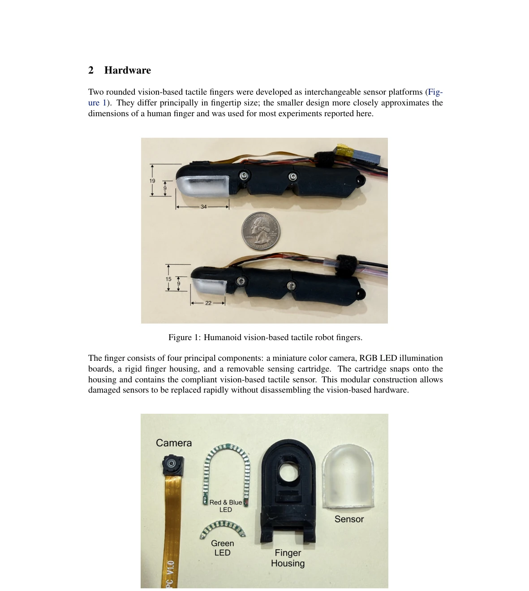
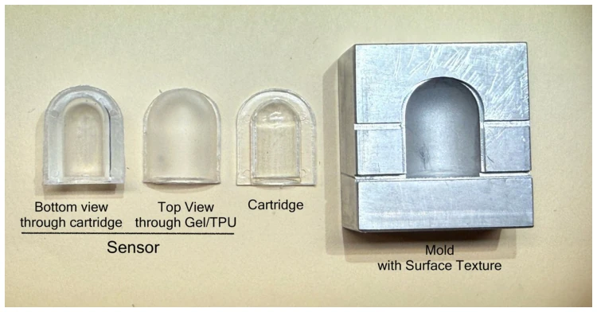
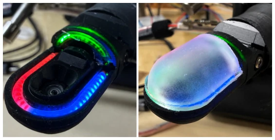
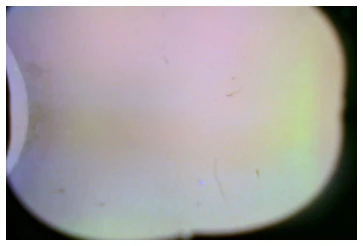
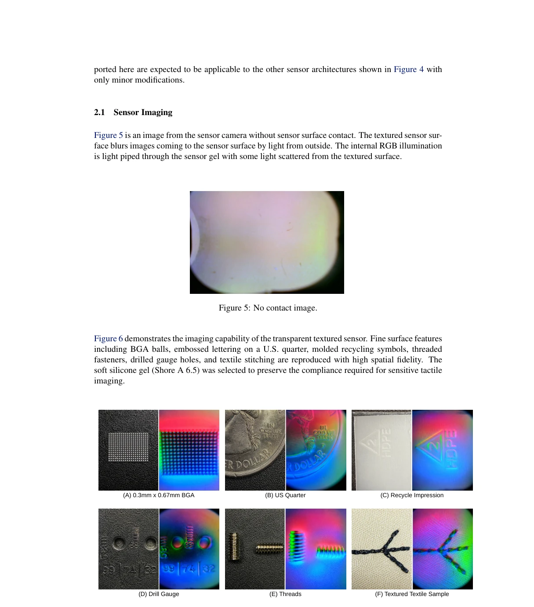
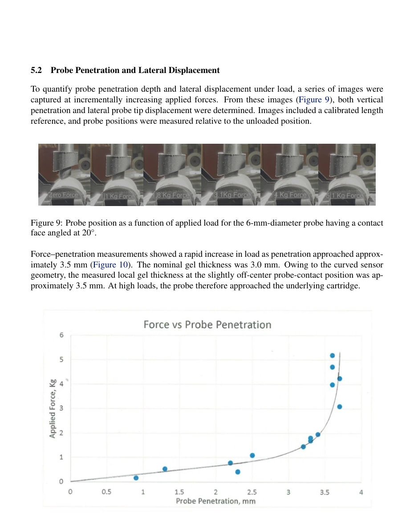
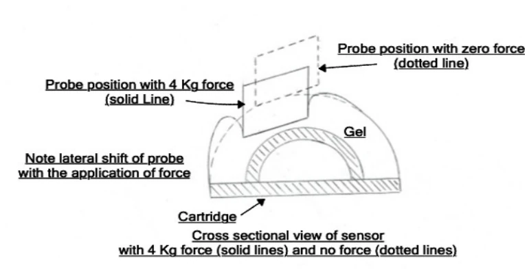

This paper provides a "bulletproof vest" for tactile sensors. The MIT team found that commercial GelSight and DIGIT are too fragile and fail after a few abrasions. They developed a design incorporating a TPU protective film and a replaceable cartridge. Although no new imaging principle was invented, durability improved by two orders of magnitude, which is very substantial. However, accelerated testing is not equivalent to real operating conditions, and only non-colored surfaces were tested; applicability to other architectures remains to be seen. Furthermore, although replaceability is convenient, does changing the cartridge truly require no recalibration each time? The paper claims "none required," but in actual engineering, optical alignment is a bit of a black art. In conclusion, it is a practical engineering improvement, but do not expect it to solve all tactile perception challenges.
Visual tactile sensors (VBTS) can provide key information such as contact position and force distribution, which is crucial for robotic hands in unstructured environments [1, 2]. However, existing commercial sensors (such as GelSight [3], DIGIT [4]) have surfaces prone to wear and poor resistance to repeated concentrated loads, limiting their application in industrial scenarios. Although existing research has attempted to improve robustness using latex layers [11] or polyurethane [13], there is a lack of systematic evaluation of progressive failure behavior and maintainability under repeated concentrated loads. Existing literature lacks sufficient industrial-grade life data, and once damaged, complex disassembly or recalibration is often required, resulting in high maintenance costs. This paper aims to resolve the contradiction between durability and maintainability, proposing a solution that is both wear-resistant and easy to replace.
Figure 4: Examples of interchangeable vision-based tactile sensing cartridges compatible with the humanoid finger platform. The present work focuses on the transparent textured sensor (upper left).
The overall architecture consists of a camera, LED, housing, and replaceable sensor cartridge. The core innovation lies in the sensor surface material: selecting Shore A 6.5 platinum-cured silicone (XP565) to ensure elasticity, with an outer layer covered by an 85-micron thick TPU film (Elastollan 1170A10). The manufacturing process includes mold texture replication, six-layer coating after TPU solution heat conditioning, and silane coupling agent treatment of the interface. The TPU film achieves high wear resistance through six-layer wet-on-wet coating, and the silicone bonds to the cartridge via Corona activation + silane treatment. The cartridge is designed as a snap-in structure, requiring no electrical disconnection or optical calibration for replacement. In terms of testing, a rotary drum sanding test and repeated probe test (RPT) were designed to simulate wear and shear deformation under concentrated loads.

Figure 2: The components of the humanoid vision-based tactile finger.

Figure 7: Sensor manufacturing components (mold and cartridge) and completed sensor.
The comparison objects were GelSight Mini and DIGIT. Sanding test (400 grit sandpaper, 200g load): Self-made sensor rupture time was about 180 minutes, commercial sensors only 0.4-0.5 minutes. Repeated probe test (39.2N, 45 times/min): Self-made sensor remained functional after 5-8 days, commercial sensors ruptured within 25-35 minutes. Results show durability improved by more than two orders of magnitude. Damage manifested as progressive (TPU local rupture or bubbling), rather than catastrophic failure, and did not affect imaging in most areas. Replacing the cartridge requires no recalibration.
其他图片Other Figures

Figure 3: Assembly of the finger housing with the LEDs and the camera, (right side) the sensor is snapped onto the finger housing.

Figure 5: No contact image.

Figure 6: Left image - object photograph, right image - finger camera image

Figure 10: Probe force as a function of penetration depth into the tactile sensor. A rapid increase in force is observed as penetration approaches approximately 3.5 mm, corresponding to near – com- plete compression of the 3.5 mm gel thickness. The non-linear increase reflects geometric confine- ment of the gel against the underlying cartridge.

Figure 11: Sectional representation of probe position at 39.2 N (4.0 kgf) applied force. The remain- ing separation between the probe surface and the underlying cartridge is less than approximately 0.5 mm. Under this condition lateral probe displacement of approximately 1.1 mm is observed produc- ing a confined shear deformation state.